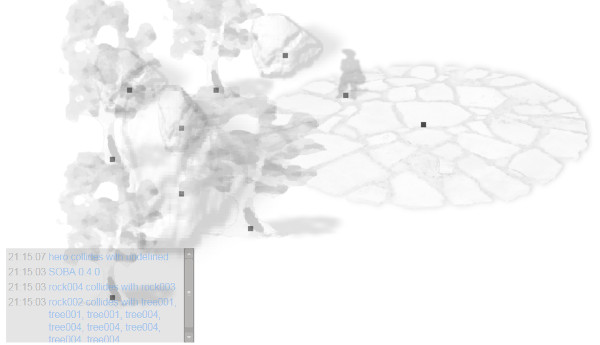

Build 0.4.0: Who's going to play with me?
Build 0.4.0 brings path finding experimentation and tuning to an end, so I've turned off the collision boxes and path debugging. I didn't realise but a large contributor to the performance was the display of path debugging, so with that turned off its surprisingly quite smooth.
I've also started ensuring the game works in Firefox, as well as my browser of choice Chrome. Didn't realise there were a few "let" and "document.evaluate" statements causing Firefox to throw up its hands.
Oh yeah there's something new to see... the message window! Yay, and I've cut back the map objects a bit because I've been playing around with how to discribe the map in a format that a future map editor might be able to maintain.
